My Pet
This page is dedicated to my pet. Oyena, Onju, Qas & Chiwawa (Wa) are my pets but my favourite is Onju. I really love them like my own family.
This is Oyena
| 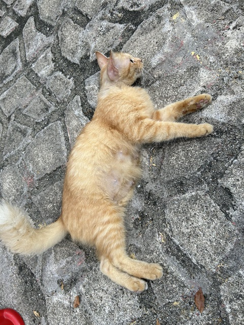 | 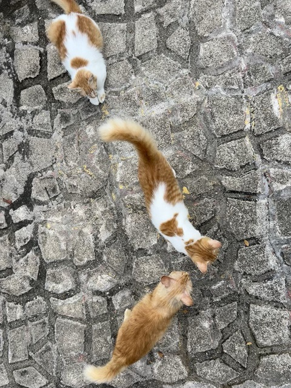 |
This is Onju
| 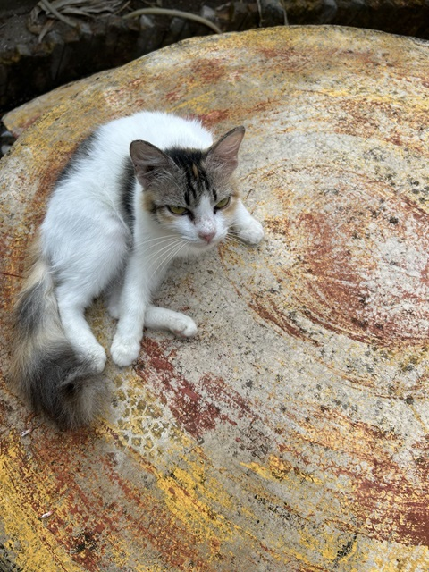 | 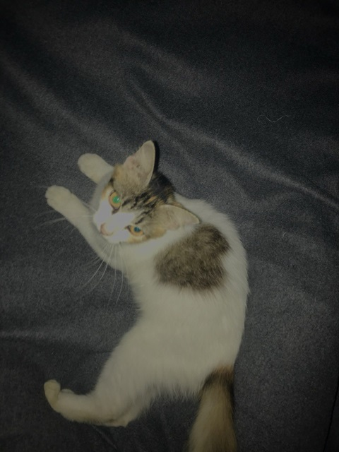 | 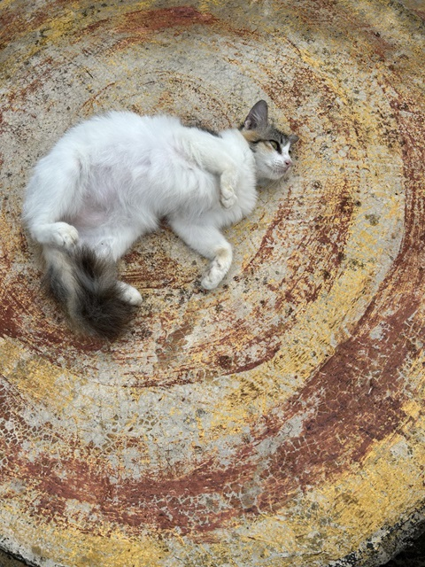 |
This is Qas
| 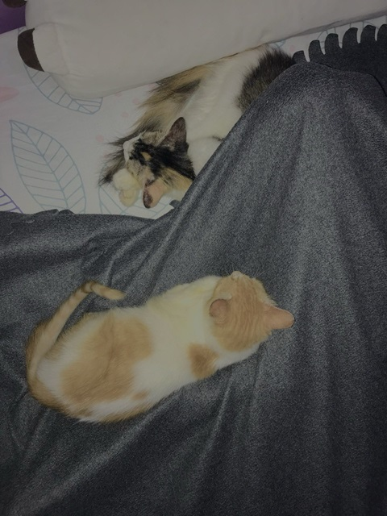 | 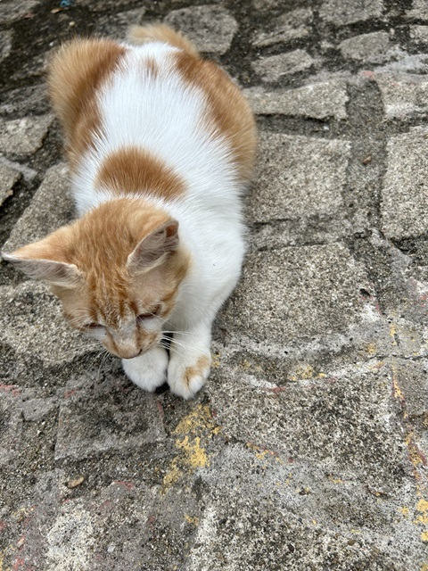 | 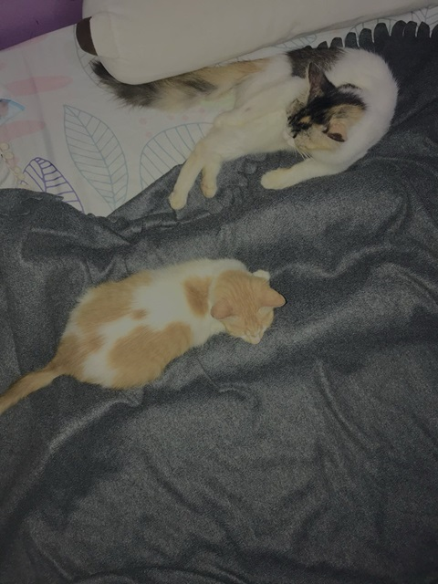 |
This is Chiwawa (Wa)
| 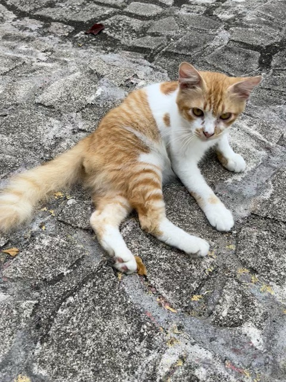 | 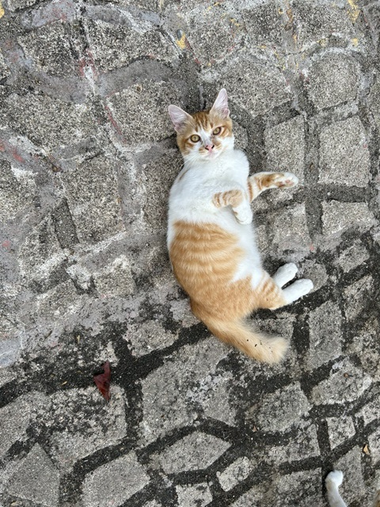 | 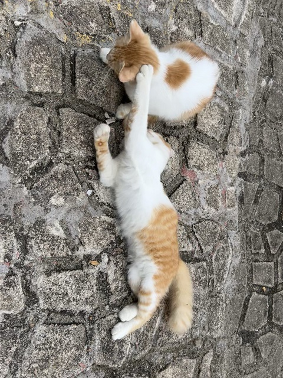 |